In this example we will make a REST web service based on
our Contacts application. It follows the last guided
practice.
In the databases unit we made entity classes and the
database access functionalities. These parts will remain the
same, the only thing we have to do is to add API REST
functionality.
Before doing this point, it’s recommended to make a new
branch, named, for instance, ‘manual-rest’.
The first command is to allow contrib bundles. We will
use the friendsofsymfony/rest-bundle bundle to
specify the REST methods as annotations. The
serializer-bundle is a dependency for the
rest-bundle.
2.2 Transforming
objects to/from JSON
As we need the objects we send and get via the API to be
encoded as JSON, we will do this task in the entity
classes.
First, we will encode a contact object as an array. Go to
the Contact class and add the next method:
We use the json_decode function to transform
the JSON content to an array and then assign the data values
to the object. Note that here we aren’t inserting or
updating the phones. You can implement that if you want.
An important thing is that, if some key is incorrect or
is not present, the system will launch an error. However, we
will manage it in the controller class.
2.3 Making the
services
First, make a new controller for the contact api:
symfony console make:controller ApiContact
We don’t need the template created automatically, so you
can delete the api_contact folder with the Twig
file inside.
The class has a Route annotation, which
means that any route we specify inside will have that prefix
(in this case, all the routes of the internal methods will
have the prefix /api/contact).
2.3.1 Getting all the
contacts (GET)
To return all the contacts, we first must to fetch them
from the database, add them to an array and return it as a
JsonResponse with the code 200:
Note how we are specifying the route with an
attribute:
#[Rest\Get('/', name:'api_contact_list')]
In this attribute, the path / is added to
the class path /api/contact.
We also send with the response an ok code to
know if the fetching of the data has been successful and an
error message if not.
We can check the route simply writing the URL in a
browser. You can also use Postman to do that. :
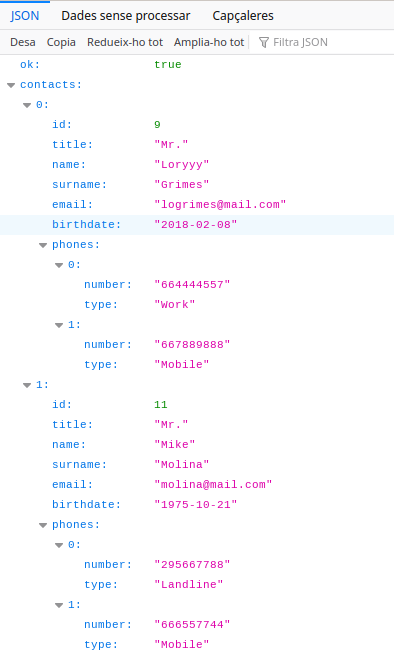
All the contacts in
Firefox
2.3.2 Getting one
contact (GET)
This is similar to the previous request, but adding the
id of the requested contact to the route.
#[Rest\Get('/{id<\d+>}', name:'single_contact_api')]publicfunction index(EntityManagerInterface $entityManager,$id=''):JsonResponse{$contact=$entityManager->getRepository(Contact::class)->find($id);if ($contact) {$contactArray=$contact->toArray();$response= ['ok' => true,'contact' => $contactArray, ];returnnewJsonResponse($response,200); } else {$response= ['ok' => false,'error' => 'No contact found with id '.$id, ];returnnewJsonResponse($response,404); }}
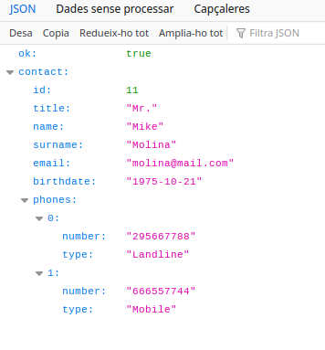
JSON response for the contact
with id=11
2.3.3 Posting one
contact (POST)
In this example we are going to insert a single contact
without phones, but you can easily extend the functionality
adding phones to an existing contact.
To insert a contact we use the POST method and the
default route (/api/contact). As the method is
different from GET, we can reuse the same route with a
different operation.
Here, the $request->getContent() method
is responsible for getting the json string.
To use the Request class, you need to import
the Symfony\Component\HttpFoundation\Request
library.
Note how we are handling the operation’s errors with a
try-catch block, because the
fromJson method will launch an error if some
key is inexistent.
To make a POST request with Postman, change the method to
POST and write in the Body section, in
raw format, the data that you want to
insert:
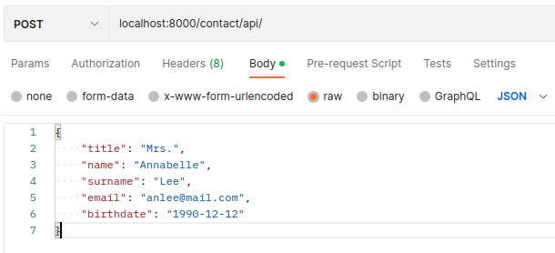
POST request with
Postman
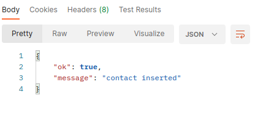
Result of the POST
request
2.3.4 Modifying a
contact (PUT)
This method is similar to the previous one, but fetching
first the contact by its id and modifying it
later with the request data. We are using the same base
route but changing the method and adding the id
of the contact.
And to do the DELETE request with Postman, we only need
to specify the DELETE method and to pass the id with the
URL:
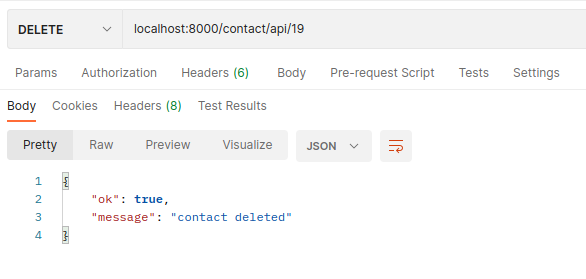
DELETE request and result
with Postman
Remember to save your requests in order to reuse them
later.
2.4 Validation
In Symfony, the validation is done in the underlying
objects. To do the data validation, we are going to use the
Symfony validator. First, install the package in your
project:
composer require symfony/validator
We will use it to validate that the data you receive from
a service (POST or PUT) are correct before carrying out the
corresponding insertions or modifications.
Validation is done by adding a set of rules, called
constraints, to a class.
The first thing is to import the validation constraints
on the Contact and Phone
classes:
Then, in the ApiContactController class,
import the ValidatorInterface and inject it in
the PUT and POST methods for using it to validate the
received data. The validator returns a list with the errors
detected, so, if that number is zero, there are not errors
and we can continue with the database operation. Each error
is an object, so we use the methods
getPropertyPath and getMessage to
get the property and the correspondent error message:
API Platform is an Open Source web
framework for API-first projects. Describe the API’s data
model or import an existing one from Schema.org and get
instantly a fully featured read/write API with REST
operations, data validation, pagination, sorting, filtering,
etc.
In this section, we will see an introduction ti API
Platform. You can expand you knowledge in their webpage: https://api-platform.com/
3.1 Standards used by
API Platform
API Platform generates the API in Json, but it use
several technologies in addition. Let’s see the more
important:
JSON-LD: JavaScript Object Notation
for Linked Data. JSON-LD is designed around the concept of a
“context” to provide additional mappings
from JSON to an RDF
model. So, with JSON-LD, we can define the schema of a JSON
document.
Hydra: Hydra is a vocabulary to
simplify the development and consumption of web APIs. It’s
like JSON-LD, but with standardized operations. The core if
Hydra is the Hydra Core Vocabulary, which
describes the most common API operations.
JSON Schema: JSON Schema specifies a
JSON-based format to define the structure of JSON data for
validation, documentation, and interaction control. It is
based on the concepts from XML Schema (XSD) but is
JSON-based.
Swagger: Swagger is an API
Specification based on OpenAPI and a suite of tools based on
it. In API Platform, Swagger is responsible for an interface
for the JSON, JSON-LD, Hydra, JSON Schema, etc, data.
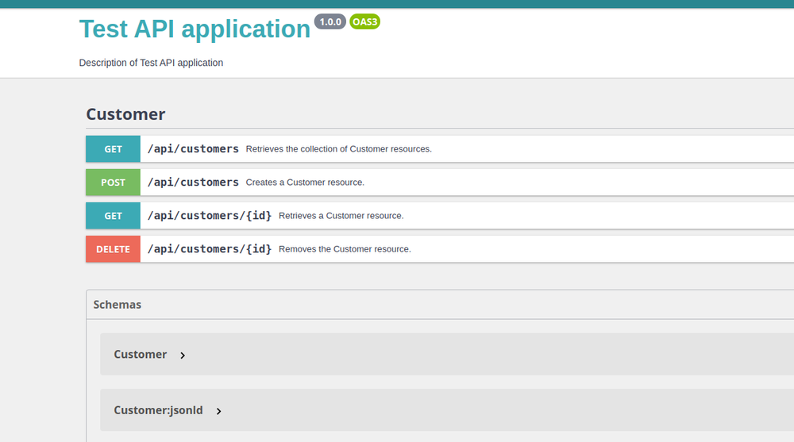
Swagger
3.2 Building the API
REST with API Platform
To show how to work with API Platform, we will create a
new project from scratch. We are going to do the menu of an
Italian restaurant, with dishes grouped by categories.
The first thing is to create the project and the required
dependencies:
symfony new italian_restaurant --version="7.1.*"cd italian_restaurantcomposer require--dev symfony/maker-bundlecomposer require api
As you can see, we only require the maker bundle, because
we don’t need views (Doctrine is installed with API
Platform). The last packet, 'api', is the API
Platform dependency.
Then, create the .env.local file to
configure the database connection, as seen in the previous
unit, and create the database:
symfony console make:entity
Class name of the entity to create or update:
> Category
Mark this class as an API Platform resource (expose a CRUD API for it) (yes/no) [no]:
> yes
created: src/Entity/Category.php
created: src/Repository/CategoryRepository.php
Entity generated! Now let's add some fields!
You can always add more fields later manually or by re-running this command.
New property name (press <return> to stop adding fields):
> name
Field type (enter ? to see all types) [string]:
>
Field length [255]:
> 100
Can this field be null in the database (nullable) (yes/no) [no]:
> no
updated: src/Entity/Category.php
Add another property? Enter the property name (or press <return> to stop adding fields):
> description
Field type (enter ? to see all types) [string]:
>
Field length [255]:
> 255
Can this field be null in the database (nullable) (yes/no) [no]:
> yes
updated: src/Entity/Category.php
Add another property? Enter the property name (or press <return> to stop adding fields):
>
Success!
symfony console make:entity Dish
created: src/Entity/Dish.php
created: src/Repository/DishRepository.php
New property name (press <return> to stop adding fields):
> name
Field type (enter ? to see all types) [string]:
> string
Field length [255]:
> 100
Can this field be null in the database (nullable) (yes/no) [no]:
> no
updated: src/Entity/Dish.php
Add another property? Enter the property name (or press <return> to stop adding fields):
> ingredients
Field type (enter ? to see all types) [string]:
> string
Field length [255]:
> 255
Can this field be null in the database (nullable) (yes/no) [no]:
> yes
updated: src/Entity/Dish.php
Add another property? Enter the property name (or press <return> to stop adding fields):
> price
Field type (enter ? to see all types) [string]:
> decimal
Precision (total number of digits stored: 100.00 would be 5) [10]:
> 10
Scale (number of decimals to store: 100.00 would be 2) [0]:
> 2
Can this field be null in the database (nullable) (yes/no) [no]:
> no
updated: src/Entity/Dish.php
Add another property? Enter the property name (or press <return> to stop adding fields):
> category
Field type (enter ? to see all types) [string]:
> relation
What class should this entity be related to?:
> Category
What type of relationship is this?
...
Relation type? [ManyToOne, OneToMany, ManyToMany, OneToOne]:
> ManyToOne
Is the Dish.category property allowed to be null (nullable)? (yes/no) [yes]:
> no
Do you want to add a new property to Category so that you can access/update Dish objects from it - e.g. $category->getDishes()? (yes/no) [yes]:
> yes
A new property will also be added to the Category class so that you can access the related Dish objects from it.
New field name inside Category [dishes]:
> dishes
Do you want to automatically delete orphaned App\Entity\Dish objects (orphanRemoval)? (yes/no) [no]:
> no
updated: src/Entity/Dish.php
updated: src/Entity/Category.php
Add another property? Enter the property name (or press <return> to stop adding fields):
>
Success!
If you can’t see the question
Mark this class as an API Platform resource?,
don’t worry, we solve that soon.
Now, run the server and go to the url
http://127.0.0.1:8002/api. You will see
something similar to:
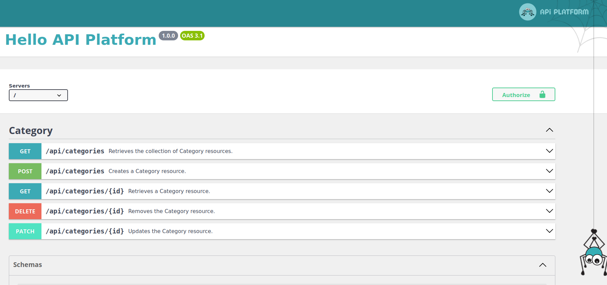
API Platform main
page
As you can see, we have all the usual REST operations for
the Category entity.
But the Dish entity doesn’t appear. We can solve it
easily editing the Dish class, importing the
ApiPlatform\Metadata\ApiResource component and
adding the attribute #[ApiResource] to the
class:
Now, refresh the page and you will see the Category
operations. Time for adding a few categories and dishes to
doing tests. You can do that with Postman or directly in the
API Platform page: open the
POST /api/categories item -> Try it
out and enter the data for the categories you want (you
don’t have to put anything in the dishes
array):
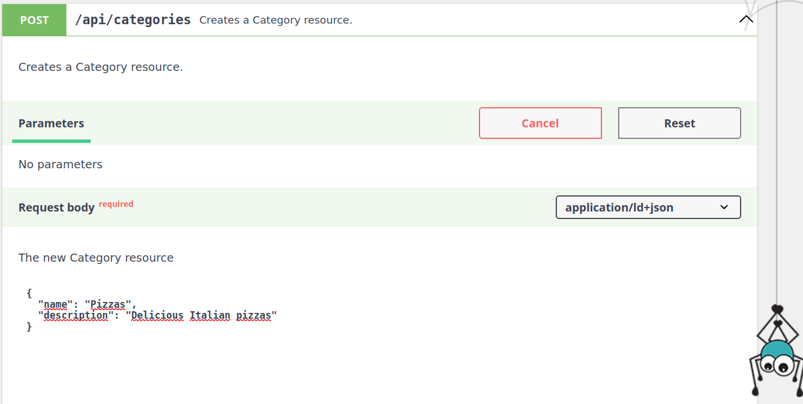
API Platform
POST
To do the operations POST and
PUT in Postman, you need to stablish the
content-type to
application/ld+json in the Headers section:
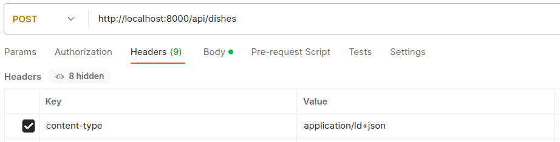
Header
content-type
Do the request as usual, but note that the price and the
category are strings. For the category you also need to
indicate the route:
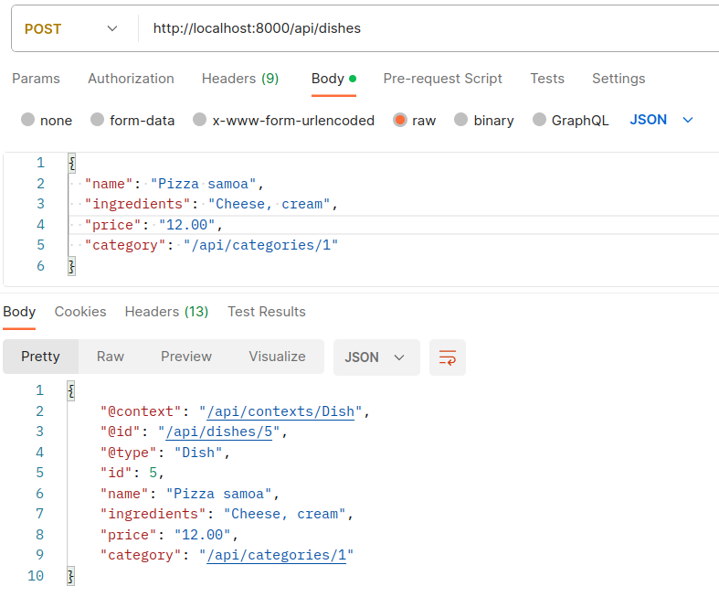
POST to API
Platform
Check all the operations with Postman and the web
interface. Note how now the GET responses are a bit
different, because them include the JSON-LD
(@context, @id,
@type) and Hydra (hydra:totalItems
and hydra:member) elements.
Finally, go to the bottom of the page and inspect the
JSON Schema created automatically by API Platform:
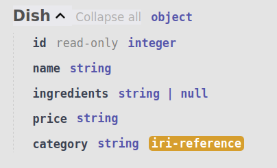
JSON Schema of the Dish
entity
3.3 Modifying the
API
Probably you have noted that a new operation has
appeared, PATCH. PATCH is similar to PUT but is intended for
partial modifications. As PUT is also capable of doing that,
we can remove PATCH from our API.
To do that, we need to expand the information of the
ApiResource attribute, adding only the operations we
want:
We can also configure the operations. For instance in the
next example, in the GET dishes by id operation, we can
specify a different route with uriTemplate and
we can require the id to be an integer with
requirements:
If you want to prefix all routes to all operations, add
the routePrefix attribute for the whole
entity:
#[ApiResource(routePrefix:'/menu')]classDish{
3.4 Serialization
Another thing we can do is to hide some fields, or to
make them read-only or write-only. To do that we need to
know the concepts of serialization, normalization and
de-normalization.
Symfony uses serialization to convert
entities (objects representing data in the application) into
a format that can be easily transmitted via HTTP, such as
JSON.
Serialization in API Platform involves the following key
concepts:
Normalization: The process of
converting your data (objects or arrays) into a format
suitable for serialization. It involves transforming data
structures into JSON.
De-normalization: The reverse
process of normalization, where the serialized data received
from the client, in JSON format, is converted back into
complex data structures within your application.
Context: The serialization and
de-normalization processes can be influenced by a context
that provides additional information or constraints. For
example, you might want to include or exclude specific
properties based on the API endpoint, user roles, or other
conditions. The
normalizationContext and
denormalizationContext options
in API Platform allow you to customize this
behavior.
To specify what groups to use in the API system:
Add the normalizationContext and
denormalizationContext attributes to the
resource, and specify which groups to use. Here you see that
we add read and write, respectively, but
you can use any group names you wish.
In the previous example, we have created the
read group for normalization (when we transform our
data to JSON), and the write group for
de-normalization (when we transform our JSON to data to
entities). Then we’ve applied the groups to all the
properties except for $dishes. If you go to the
Swagger UI and do any operation you will see that the
$dishes array doesn’t appear. If you want to
see the array only in the get operations, simply add the
#[Groups(['read'])] attribute to
$dishes.
3.5 Documenting the
API
The Swagger interface also works as a documentation page.
We can add annotation comments to our classes and they will
be visible on the frontend.
For instance, add the next comments to the Category
class:
/*** The name of the category*/#[ORM\Column(length:100)]private?string$name=null;/*** The category description*/#[ORM\Column(length:255, nullable:true)]private?string$description=null;/*** A list with the dishes of each category*/#[ORM\OneToMany(mappedBy:'category', targetEntity:Dish::class)]privateCollection $dishes;
Now the descriptions appear on the Schema section:
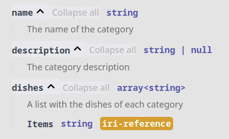
Schema comments
We can also describe each class adding a description
element to the ApiResource attribute:
...#[ApiResource ( operations: [newGet(),newGetCollection(),newPost(),newPut(),newDelete(), ], description:'Categories of meals',)]classCategory...
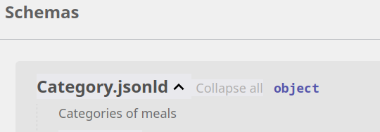
Class
description
3.6 Subresources
When you do a GET operation for /api/dishes,
you get something like:
But, what does mean "/api/categories/1"? It
will be better if we could see the category name instead of
their route.
It is possible to embed related objects (or only some of
their properties) directly in the parent response through
the use of serialization groups. By using the following
serialization groups attribute (#[Groups]), a JSON
representation of the category is embedded in the dish
response. As soon as any of the category’s attributes is in
the dish group, the category will be embedded:
We use the uriTemplate attribute to create
the route, operations to specify that we want
to get a collection of dishes and uriVariables
to link the Category class to the category property in Dish.
If you go to the route
/api/categories/2/dishes, for instance, you’ll
get all the dishes of the category with id 2.
3.7 Filters
We can use the Api Platform filters to search specific
data in our api.
To use them, we can add the ApiFilter attribute and the
required dependencies:
With this code we can search by a custom string in the
name property. For example, if we go to the GET
/api/dishes request in the Swagger fronten, we
can find a new field for searching in the name
property:
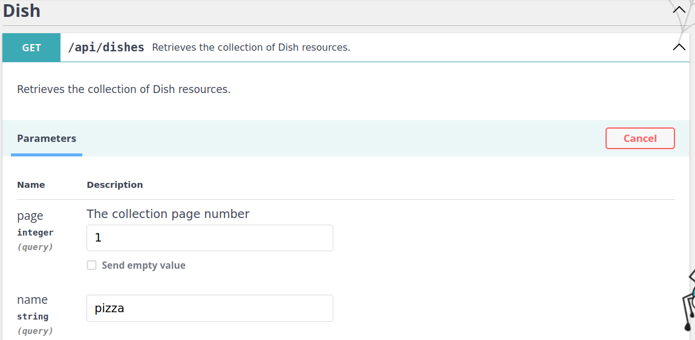
Search filter
If we write pizza, we retrieve all the
dishes with the pizza string in their name.
If we want to use the api endpoint directly, we can write
the query in the query string:
http://127.0.0.1:8000/api/dishes?name=pizza
The search filter supports exact,
partial, start,
end, and word_start
matching strategies:
exact searches for fields with the
exact string.
partial strategy uses
LIKE %text% to search for fields that contain
text.
start strategy uses
LIKE text% to search for fields that start with
text.
end strategy uses LIKE %text to search for
fields that end with text.
word_start strategy uses
LIKE text% OR LIKE % text% to search for fields
that contain words starting with text.
In MySQl the commonly used utf8_unicode_ci
collation (or utf8mb4_unicode_ci)
performs case-insensitive searches by default.
API Platform takes care of validating the data sent to
the API, relying on the Symfony Validator Component. As the
validator package is included with API Platform, we only
need to add the library and the asserts to each class:
Symfony’s security system is very powerful and versatile,
although it can also be complicated to understand and
configure. In this unit we will learn its main elements:
The authentication mechanism: how the
users can access the app and where their credentials are
stored.
The authorization mechanism: once the
user has been logged in correctly, determine their
permissions and what resources can access and which
can’t.
4.1 The
security.yaml file
The config/packages/security.yaml file
stores the general configuration of the security system of
our Symfony application. Its default content is:
The User providers: The user provider
loads users from any storage (e.g. the database) based on a
“user identifier” (e.g. the user’s email address).
The Firewall: The firewall is the core
of securing your application. Every request within the
firewall is checked if it needs an authenticated user. The
firewall also takes care of authenticating this user
(e.g. using a login form).
Access Control (Authorization): Using
access control and authorization, you control the required
permissions to perform a specific action or visit a specific
URL.
4.2 The User
Permissions in Symfony are always linked to a
user object. If you need to secure your
application, you need to create a user class. This is a
class that implements UserInterface. This is
often a Doctrine entity.
The easiest way to generate a user class is using the
make:user command from the MakerBundle:
symfony console make:user
The name of the security user class (e.g. User) [User]:
> User
Do you want to store user data in the database (via Doctrine)? (yes/no) [yes]:
> yes
Enter a property name that will be the unique "display" name for the user (e.g. email, username, uuid) [email]:
> email
Will this app need to hash/check user passwords? Choose No if passwords are not needed or will be checked/hashed by some other system (e.g. a single sign-on server).
Does this app need to hash/check user passwords? (yes/no) [yes]:
> yes
created: src/Entity/User.php
created: src/Repository/UserRepository.php
updated: src/Entity/User.php
updated: config/packages/security.yaml
This is the normal procedure: we tell to the maker the
user class name
(User), if we want to store the
user’s data in the database via Doctrine
(yes), the field used to login or
display name (‘email’) and if the
system must hash the password before store it
(yes).
Once finished the process, the maker has created 2 files,
src/Entity/User.php and
src/Repository/UserRepository.php, and has
updated the providers section in the
security.yaml reflecting the new users
provider:
Now, the system knows which class must be used to store
and to check users (App\Entity\User)
and which property is used to identify the user
(email).
User providers are used in a couple places during the
security lifecycle:
Load the User based on an identifier:
During login, the provider loads the user based on the user
id.
Reload the User from the session: At
the beginning of each request, the user is loaded from the
session. The provider “refreshes” the user from the database
to make sure all user information is up to date.
Once created the User class, the next step
is to do the migration process. But before, you can add more
properties to the class, such as name, surname, address,
phone, etc, with
symfony console make:entity User and telling
the assistant the new properties you want.
If your class is OK, do the migration progress as
usual:
And the table user will be created in the
database:
mysql> describe user;+----------+--------------+------+-----+---------+----------------+| Field | Type | Null | Key | Default | Extra |+----------+--------------+------+-----+---------+----------------+| id | int | NO | PRI | NULL | auto_increment || email | varchar(180) | NO | UNI | NULL | || roles | json | NO | | NULL | || password | varchar(255) | NO | | NULL | |+----------+--------------+------+-----+---------+----------------+
In MariaDB the roles field is done as a
longtext type instead of json, but
it works in the same way.
4.2.1 Hashing
Passwords
The SecurityBundle provides password hashing and
verification functionality. If you have created your user as
shown before, your user class should implement the
PasswordAuthenticatedUserInterface:
Traditional authentication mechanisms in web apps are
based on sessions: the user submits his credentials through
some form, the server validates and stores the data of the
logged in user in the session, so that, while the session
doesn’t expire or isn’t closed by the user, they can
continue accessing without having to re-login.
However, this type of authentication has the limitation
of being exclusive to web applications. If we want to adapt
the application to mobile or desktop versions, we need
another mechanism.
To get over this, we can use token-based
authentication. This is a stateless
authentication, which means that nothing is stored between
client and server to continue accessing authenticated (no
sessions). What is done is the following:
The client sends to the server its credentials (username
and password).
The server validates them, and if they are correct,
generates an encrypted string called token,
which contains the user’s validation, plus some additional
information (such as the user’s login, for example). This
token is sent back to the user as a response to their
authentication.
From this point on, whenever the client wants to
authenticate against the server to request a resource, it
needs to send the provided token. The server will verify it
and grant or deny access.
Like sessions, tokens can also expire, which is indicated
within the token itself. After the expiration time, if the
server receives the token, it will discard it as invalid
(expired), and the client will again be unauthenticated.
A JWT token has the next components:
Header: has two parts, the type of the
token, which is JWT, and the signing algorithm being used,
such as HMAC SHA256 or RSA.
Payload: the data encoded in
Base64Url.
Signature: created with the encoded
header, the encoded payload, a secret and the algorithm
specified in the header.
And write in
config/packages/lexik_jwt_authentication.yaml:
lexik_jwt_authentication:secret_key:'%env(resolve:JWT_SECRET_KEY)%' # required for token creationpublic_key:'%env(resolve:JWT_PUBLIC_KEY)%' # required for token verificationpass_phrase:'%env(JWT_PASSPHRASE)%' # required for token creationtoken_ttl:3600 # ttl (duration) in seconds, default is 3600
To configure the API security firewalls in
security.yaml, we need to place the
api and the main firewalls as
shown below:
And, in the access_control section of the
same file:
access_control:-{path: ^/api$,roles: PUBLIC_ACCESS } # Allows accessing the Swagger UI-{path: ^/auth,roles: PUBLIC_ACCESS }-{path: ^/api/users$,roles: PUBLIC_ACCESS,methods: POST }-{path: ^/,roles: IS_AUTHENTICATED_FULLY }
You must also declare the route used for
/auth in config/routes.yaml:
auth:path: /authmethods:['POST']
With these paths any user can acces to the Swagger
frontend and to the /auth path, but if you try
to acces any path of the API, you’ll get the response:
{"code":401,"message":"JWT Token not found"}
4.5 Registering
users
If you go the the new path http://localhost:8000/auth
(using Postman) and enter an email and a password, you’ll
get the response:
{"code":401,"message":"Invalid credentials."}
This is because we don’t have any registered user. We
need to modify the User entity to allow
registrations through it:
In the POST and PUT operations, we use a processor
called UserPasswordHasher. This processor will
catch the data in these operations and process them to hash
the plain text password.
We only expose the fields email and
plainPassword.
Next, in src/State, create the processor
UserPasswordHasher.php :
This processor captures the data sent to the server and
takes the plainPassword field to generate a
hashed password, which is stored in the
password field. Finally, deletes the plain
password for security.
The last step is to register the processor in the file
config/services.yaml:
For our app we want the next roles and permissions:
Unauthenticated users: can access to the registration
(POST /api/users) and to the authentication
(POST /auth) routes.
Normal users (ROLE_USER): can access to all
the GET routes.
Admin users (ROLE_ADMIN): can access to all
the operation routes.
First, we need at least one admin user. A simple way to
do that without doing an extensive user management system,
is adding the next lines to the
UserPasswordHasher processor:
publicfunction process($data,Operation $operation,array$uriVariables= [],array$context= []) { ...$data->eraseCredentials();//Set admin rol for the next registered user//Comment these lines to return to normal users $roles[] ='ROLE_ADMIN';$data->setRoles($roles);return$this->processor->process($data,$operation,$uriVariables,$context); }
Don’t forget to comment the lines once you have the
desired admin users.
To register users with Postman go th the POST
/api/users route and send the users data, email
and plainPassword. You will get a response with the id of
the new user and their email:
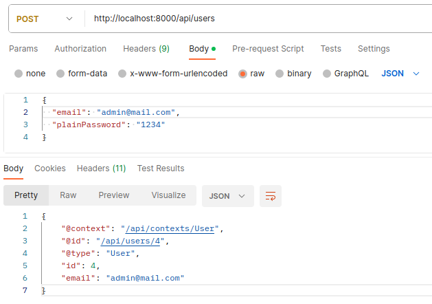
Registering
users
On your database now you can see the registered users and
their roles (the ROLE_USER is added
automatically every time we get a user from the database,
see the getRoles() method in the
User class):
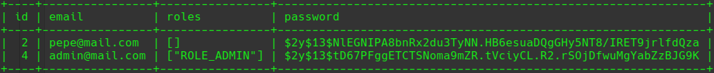
Users in the DB
Once we have users with the admin and normal roles, we
only need to add security attributes to the
related classes:
As you can see, we are requiring the
ROLE_USER for all the operations with
security: "is_granted('ROLE_USER')" for the
whole class, and the ROLE_ADMIN for only the
PUT, POST and DELETE operations
(new Post(security: "is_granted('ROLE_ADMIN')"),
etc).
The first step is to authenticate the user using its
credentials. You can test getting the token with Postman.
Send a POST request to the /auth route and a
json string in the body with valid username and
password:
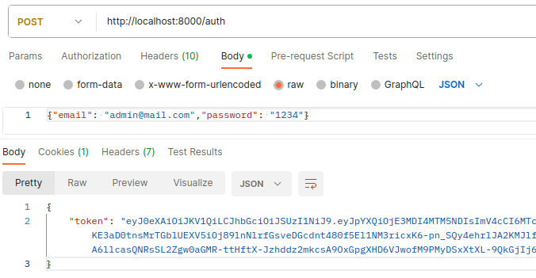
Getting token
Copy the value of “token”.
Now, make a get request without the token. You will get
JWT Token not found message.:
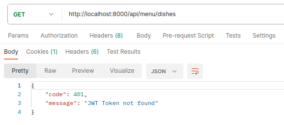
Unauthenticated GET
request
To do a successful request, we must add an
Authorization header which value will be
“Bearer” (with an ending space) followed by
the token value:
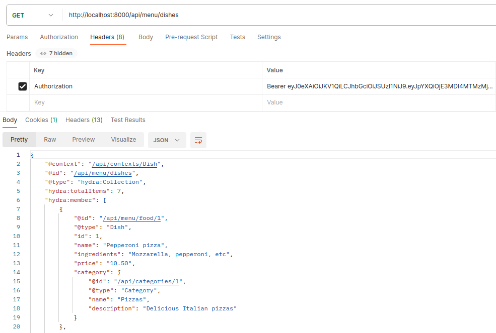
Authenticated GET
request
That’s all! Try to do the rest of the requests with the
token. The POST, PUT and DELETE operations only will work
with an admin user, while a normal registered user can use
only the GET operations. Remember that the token will last
only for 1 hour.